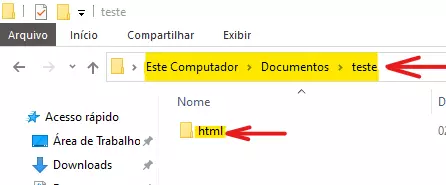
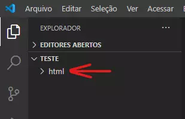
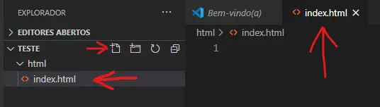
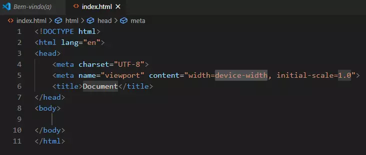
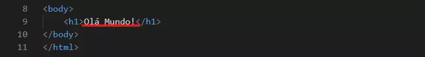

O que é HTML? Simples, HyperText Markup Language, Significa Linguagem de marcação de hipertexto. Digamos que seja um editor de texto para Navegadores, essa ferramente é usada para que possamos editar o nosso conteudo, e tambem possamos marca certas coisas para que ferramentas como CSS e JavaScrip possam interagir com as Tags, essas ferramentas trazem designer(CSS) e interatividade(JavaScrip).
Por exemplo a Tag <header> não tem mudança visivel porem ela está la indicando que tudo que esta entre ela é um cabeçalho. Você pode usar css para editar o cabeçalho, mas isso fica para mais a frente.
cada edior tem uma forma de iniciar um arquivo de HTML, porem recomendo usar o Visual Studio Code. Primeiro vá para documentos no seu PC (ou em outra pasta desejada) e crie uma nova pasta para menter tudo organizado, a nova pasta pode se chamar 'Teste' dentro dela crie uma nova pasta com o nome HTML.

Agora no Visual Studio Code vamos abrir a pasta, vá em Arquivo e Abrir Pasta

a outra pasta vai esta dentro e você podera acessar posteriormente. Selecione a pasta html e a cima tera quatro icones o primeiro é para criar um novo arquivo, clique nesse e em seguida nomeio com o nome index.html (note que esta em menusculo, escre sempre nomes dos arquivos em menusculo), note que é importante colocar a extenção do arquivo que no caso é .html, no VS code existe outras linguagens de programação você deve ser bem especifico com o que você quer.

Vai se abrir a pagina em branco, digite nela ! e aberte enter ou clica na opçõe que aparece ao digitar a exclamação ou você pode digitar html:5, ira aparecer o seguinte:

▸Na primeira linha vemos: <!DOCTYPE html> que declara que é um documento tipo HTML.
▸Segunda linha: <html lang="en"> diz ao navegador que seu site qual o idioma, vem em ingles mas pode mudar colocando entra as "pt-br".
▸Terceira linha: <head> aqui temos a cabeça, note que existe outra na linha sete, é a mesma Tag porem esse é o fechamento. algumas Tags possuem fechamento e outras não, a maioria possui o fechamento, mas não se preocupe em saber porque tem ou não tem, isso é uma questao muito além do que estamos vendo aqui. <head> é onde se faz algumas definições do site e onde podemos colocar link para puxar o css e o JavaScrip, vamos ver mais a frente.
▸Quarta linha: <meta charset="UTF-8"> aqui você não mexe. Essa é uma configuração para nosso alfabeto, que contem acentuação.
▸Quinta linha: <meta name="viewport" content="width=device-width, initial-scale=1.0"> é uma predefinição da sua pagina, não se muda.
▸Sexta linha:
No body que esta na linha oito temos a liberdade de escrever qual quer coisa, mas reza a lenda que quem nunca iniciar seu primeiro programa com o famoso Hello world! nunca aprendera a programar a linguagem que esta praticando... Bom é so uma lenda mas eu mesmo não me arisquei, quer dizer não mais, no passado não fiz e so vim aprender depois de alguns anos depois e dessa vez eu fiz tudo certinhoi.
você pode só escrever Hello world ou pode incrementar com um <h1></h1>, digite entre ele o Ola mundo (pode ser um portugues mesmo😊), o h1 é usado para titulos, 1 é o maior e vai ate 6 que é o menor. faça testes para ver a diferença.
